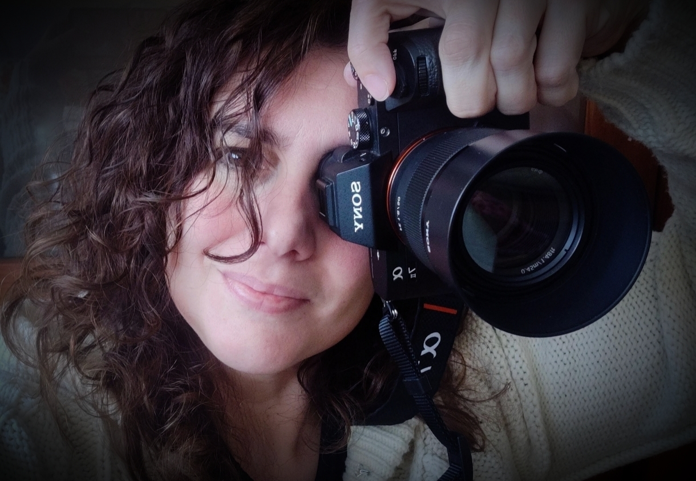

Acompaño a mujeres (y también a hombres) en procesos de transición vital a través de la fotografía emocional. Mi trabajo nace de la escucha, la calma y la presencia. No busco la pose perfecta, sino la verdad que aparece cuando dejamos de sostenernos.
